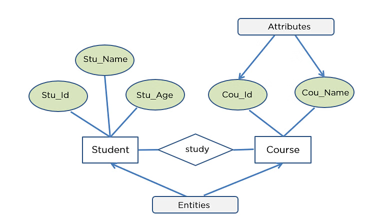

One-to-Many relationship
Database Modelling
Now that you’ve learned how to model a basic, single-entity database, let’s explore attributes, which define the characteristics of an entity.
Attributes
Attributes store important details about each record in a table, helping to describe and organize data effectively.
In a database, attributes can be classified based on whether they require a value. A required attribute must always have a value and cannot be left empty, while an optional attribute can be left empty (NULL).
We use NULL to indicate missing values. Missing values can occur for different reasons, such as an existing attribute without data (e.g., a middle name) or an inapplicable condition (e.g., an apartment number for a house address).
Don’t confuse NULL values with blank or zero.
Multiple meanings:
- Unknown data
- Inapplicable data
- No value supplied
- Value undefined
We will come back to NULL values later.
Each attribute has a domain, which defines the set of possible values it can take.
A domain is the set of possible values that an attribute can have. Think of it like a rule that defines what kind of data is allowed in a column. For example, if you have an attribute “Age,” its domain might be whole numbers between 0 and 120. If you have a “Country” attribute, its domain would be a list of valid country names. Domains help keep data consistent and prevent errors, like entering text in a column meant for numbers.
To uniquely identify each record, identifiers are used—these are attributes that hold unique values for each instance. In relational databases, the primary key serves as this unique identifier.
Sometimes, a composite identifier is needed, which combines two or more attributes to uniquely identify a record (e.g., a combination of Course ID and Student ID to track enrollments).
Attributes can be classified into different types:
- Composite attribute: Attribute that can be subdivided to yield additional attributes
- Simple attribute: Attribute that cannot be subdivided
- Derived attribute: Attribute whose value is calculated from other attributes
- Derived using an algorithm (i.e., Yield = Dividend * Quantity)
- Sometimes called ‘calculated fields’
- Single-valued attribute: Attribute that holds only a single value
- Multivalued attributes: Attributes that hold many values
Understanding these attribute types is essential for designing efficient databases that accurately represent real-world scenarios.
Multivalued attributes
Think of the data scientists database we modeled last week.
How would the model change, if our data scientist could get a second degree? Or multiple certificates?
A multivalued attribute is an attribute that can have multiple values for a single entity. For example, an employee might have multiple phone numbers or an author might write multiple books. In database design, multivalued attributes should be handled properly to maintain data consistency. One approach is to create separate attributes for each component of the multivalued attribute (e.g., Phone_1, Phone_2). A better approach is to create a new entity that holds the multiple values, linking it to the original entity through a relationship (e.g., an Employee_Phone table linked to an Employee table). This ensures better organization, eliminates redundancy, and improves data integrity.
Now, try to apply that knowledge to our data scientists database.
Entity Relaionship
There is one more new thing in the model above. Habe you noticed that the entities are “linked”. These are entity relationships.
In database design, relationships define how different entities (tables) are associated with one another. These relationships follow business rules, which describe how entities interact based on real-world scenarios. For example:
- a customer can place many orders
- a team can have many players.
These relationships help ensure that data is properly structured and connected.
A key characteristic of relationships is that they are bi-directional, meaning they should always be read both ways. For example, while a customer can place many orders, each order is placed by only one customer. Understanding relationships in both directions is crucial for designing a clear and logical database structure.
Properly defining entity relationships improves data integrity, reduces redundancy, and enhances query efficiency. By embedding relationships directly into the database design, businesses can enforce rules and constraints that reflect real-world operations, making data retrieval and management more efficient.
Consider our brand table from last week. Let’s say we want to track also info about lodging chains.
{kind=link}
Since we have multiple hotels owned by the same chain, storing this information in one table would create redundancies.
It is better to create a new entity, and specify the relationship beween the two.
One-to-many Relationship
This particular case of relationship is called one-to-many relationship.
A one-to-many relationship means that one record in a table is linked to many records in another table. Like in our case, one lodging chain can own many hotels, but each hotel belongs to only one chain. See the example of Hilton Hotels:
{kind=link}
This type of relationship helps organize data efficiently, avoiding duplication and ensuring consistency.
Let’s go back to our stock portfolio table for a second. Remember that it contains stock market data that is used by an investment firm dealing with international commodities and agricultural products.

We said that there might be several problems (called anomalies) with it:
- Insertion anomalies occur when adding new data is difficult due to missing dependencies.
- Update anomalies lead to inconsistencies when changes must be made in multiple places.
- Deletion anomalies cause unintended data loss when removing a record also removes critical information.
Let’s try to design a database to store our stock portfolio data!
Exercise
Develop a data model for Marriott International to keep track of relevant information about its portfolio of hotels
Focus on the assets, not on customers, employees, or transactions

Hierarchical relationships
Hierarchical relationships occur frequently in databases and follow a one-to-many structure, where one entity has multiple related entities beneath it. This structure is similar to a tree, where a parent node can have multiple child nodes, but each child has only one parent. For example, in a company database, one manager oversees many employees, but each employee has only one direct manager. Similarly, a firm can have many divisions, a division can have many departments, and a department can have many sections (see the example below).
These relationships help organize data logically and efficiently, making it easier to navigate and retrieve information.
{kind=link}
Mapping to a relational database
So far, we covered a lot of abstract terms like entity, instances, attributes etc. As you correctly notice, we could simply say table, row, and columns instead. However, there is a good reason for using these abstract terms.
Understanding entities, instances, and attributes rather than just tables, rows, and columns is important because it helps us focus on the conceptual meaning of the data rather than just its storage format.
- Entity vs. Table: An entity represents a real-world object or concept (like a “Customer” or “Product”), while a table is just how we store data in a database. Thinking in terms of entities helps us design better database models before deciding how to implement them.
- Instance vs. Row: An instance is a specific example of an entity (e.g., a particular customer, “John Doe”). A row is how that instance is stored in a table. Thinking in terms of instances makes it easier to understand relationships between data.
- Attribute vs. Column: An attribute describes a characteristic of an entity (e.g., a customer’s “Name” or “Email”). A column is just where this data is stored. By focusing on attributes first, we ensure that all necessary information is captured properly.
By using these abstract concepts, we can design flexible and well-structured databases before deciding how to implement them in a specific DBMS.
Mapping Entities to Tables
When designing a relational database, entities and their relationships are translated into tables and columns. The process follows these key steps:
- Each entity becomes a table
- The entity name becomes the table name
- Each attribute becomes a column
Handling One-to-Many Relationships
In a one-to-many relationship, we structure the tables as follows:
- Add a column to the table on the “many” side of the relationship
- Store the identifier of the “one” side in this added column
This ensures proper linkage between related data while maintaining database integrity.
Parsimonious notation
The conceptual database model uses a parsimonious notation, meaning that extra attributes do not need to be explicitly modeled, as they can be inferred from the relationship.
{kind=link}
Integrity constraint
Ensuring data integrity is crucial in relational databases. Entity integrity maintains the uniqueness and validity of primary keys, while referential integrity ensures that foreign keys correctly reference existing primary keys. These rules help prevent inconsistencies and maintain reliable relationships between tables.
Entity Integrity
- A primary key must be unique.
- Primary keys can never have NULL values.
Referential Integrity
- For every non-null value of a foreign key, there must be a matching primary key with that value.
- Example: For every value of
chainIDin thebrandtable, there must be a corresponding value ofchainIDin thelodgingChaintable.
- A primary key must exist before a foreign key can be defined.
##Implementable database model
Remember these beatiful drawings?


So far, we mainly focused on a conceptual database model. But there is also implementational (or logical) database model.
The conceptual database model focuses on the high-level structure of the data, emphasizing entities, relationships, and constraints without considering how the data will be physically stored. It serves as a blueprint for understanding data requirements and is independent of any specific database management system (DBMS). On the other hand, the implementational database model translates the conceptual design into a format that a DBMS can use, incorporating tables, columns, keys, and constraints based on a specific database system. While the conceptual model is abstract and business-oriented, the implementational model is detailed and technical, bridging the gap between design and actual database implementation.
We will learn how to design such implementational models in few weeks. First, let’s learn how to read them.
{kind=link}
{kind=link}
Identifying and non-identifying relationships
In database modeling, identifying and non-identifying relationships refer to how entities are related to one another. An identifying relationship occurs when the child entity’s existence depends on the parent entity, and the child entity’s primary key includes the parent’s primary key. This often happens in cases where the child cannot exist without the parent (e.g., an order item cannot exist without an order). In contrast, a non-identifying relationship occurs when the child entity can exist independently of the parent entity, and the child’s primary key does not include the parent’s primary key. Here, the relationship is more loosely coupled (e.g., a customer can exist without an address).
In the implementational model, the relationships will look slightly differnt.
{kind=link}
{kind=link}
In the conceptual model, we will have to add a small plus (+) over a relationship, to mark the identifying relationship.
Database Manipulation
This week we will start querying models that are slightly more advanced. You know now, that we can have models with more than one table and a relationship between them. Our hotel database evolved accordingly and we now store the data about lodging chaing in a separate table called lodgingChain.
Aggregate functions
In SQL aggregate functions help you combine lots of data into one result. These are like math operations that work on whole columns of information instead of just single values.
Here are the main aggregate functions:
- COUNT(): Tells you how many items are in your data (like counting how many customers you have)
- SUM(): Adds up numbers (like finding your total sales for the month)
- AVG(): Calculates the average (like finding the typical price of products)
- MIN(): Finds the smallest value (like identifying your cheapest item)
- MAX(): Finds the largest value (like identifying your most expensive item)
These functions are super helpful when you want to get quick summaries from your database without looking at every single row of information. You simply add the to your query follwoing this pattern:
SELECT FUNCTION(columnName) FROM tableName;Let’s test them in our brand table!
Find the average hotel room square footage for all brands.
SELECT AVG(brandMinSqFt) AS avgArea FROM brand;What is the area of the largest hotel room specification in the DB? Rename as “Biggest Room”
SELECT MAX(brandMinSqFt) AS 'Biggest Room' FROM brand;How many total brands do we have data for?
SELECT COUNT(*)FROM brand;The query below is an equivalent to the previous one. Can you explain why?
SELECT COUNT(brandName)FROM brand;What is the total number of hotel rooms? - All rooms of all chains.
The solve this task, you will have to query different table…
SELECT SUM(numRooms) FROM lodgingchain;JOINing tables
Joining tables in SQL allows you to combine related data from different tables into a single result set. The simplest way to join tables is using the WHERE clause with the equals operator (which is great!ü§© because you already know how to use WHERE).
Here’s how it works:
- Basic JOIN using WHERE: You list both tables in the FROM clause and use WHERE to match related columns
- Example syntax:
SELECT * FROM brand, lodgingchain WHERE brand.chainID = lodgingchain.chainID; - How it works: This tells SQL to match each row from the first table with rows from the second table where the specified columns have the same value
- Result: Only rows where the join condition is true appear in your results
This approach creates what’s known as an “inner join” - it only shows data where there are matches between both tables. We will explore more powerful ways to join tables in our next session.
Try it yourself!
SELECT * FROM brand, lodgingchain
WHERE brand.chainID = lodgingchain.chainID;Exercise
Report the headquarter location of each brand’s parent chain.Order by brand name.
SELECT brandName, headquarters
FROM brand,lodgingchain
WHERE brand.chainID = lodgingchain.chainID
ORDER BY brandName;A cross-product in SQL occurs when you join two tables without specifying a join condition. This creates a result set containing every possible combination of rows from both tables. For example, if you run SELECT * FROM brand, lodgingchain; without a WHERE clause, each row from the brand table will be paired with every row from the lodgingchain table. If your brand table has 100 rows and your lodgingchain table has 500 rows, you’ll end up with 50,000 rows in your result set.
Cross-products are rarely useful in practical applications and can cause serious performance problems with large tables, which is why properly specifying join conditions with WHERE clauses is essential for efficient queries.
SELECT * FROM brand, lodgingchain;Homonyms in database design—particularly columns with identical names across different tables—create risks. When fields like “id” or “status” appear in multiple tables but represent different concepts, developers may mistakenly join these columns or apply incorrect business logic. This confusion leads to flawed queries, unpredictable results, and potential data corruption.
To prevent these issues, best practices include using descriptive, context-specific column names (e.g., “customer_id” instead of just “id”), implementing consistent naming conventions, and maintaining clear documentation of each column’s specific meaning and purpose.
However, sometimes you may find a database with homonyms. Let’s take a look at our nation-stock database. Try to run the query below. What is the result? How would you change the query to get the correct result?
{kind=link}
SELECT * FROM stock, nation
WHERE stock.natcode = nation.natcode;
Grouping the results
The GROUP BY clause in SQL allows you to organize similar data into groups and perform aggregate functions on each group separately rather than on the entire table.
Here’s how it works:
- Basic purpose: Groups rows that have the same values in specified columns
- Typical usage: Used with aggregate functions (COUNT, SUM, AVG, etc.) to perform calculations on each group
- Example syntax:
SELECT chainHQ, COUNT(*) FROM lodgingChaing GROUP BY chainHQ; - Result: One row for each unique value in the grouped column(s)
- Multiple columns: You can group by multiple columns like
GROUP BY department, job_title - Common requirement: Generally, columns in the SELECT list must either be part of the GROUP BY clause or used within an aggregate function
SELECT headquarters, COUNT(*) FROM lodgingchain
GROUP BY headquarters;GROUP BY is essential for summarizing data and generating reports that show totals, averages, or counts for different categories within your data.
Exercise
Report number of brands in each chain by chain name (not chainID).
SELECT chainName, COUNT(brandName) AS NumBrands
FROM brand, lodgingchain
WHERE brand.chainID = lodgingchain.chainID
GROUP BY chainName;HAVING
In SQL, the HAVING clause is used to filter the results of a GROUP BY query. It is like WHERE clause for grouped results. However, HAVING allows you to filter groups based on aggregate functions (like COUNT(), SUM(), AVG(), etc.), which cannot be done using the WHERE clause.
The WHERE clause filters rows before they are grouped, while HAVING filters groups after the aggregation is done.
Consider the previous example. We can easily filter the results and keep only, for example, countries with at least 3 headquarters.
SELECT headquarters, COUNT(*) FROM lodgingchain
GROUP BY headquarters
HAVING COUNT(*) >= 3;Exercise
Report the average room area and number of brands for all chains that own more than one brand
SELECT chainName, AVG(brandMinSqFt) AS avgArea, COUNT(*) AS totalBrands
FROM brand, lodgingchain
WHERE lodgingchain.chainID = brand.chainID
GROUP BY chainName
HAVING COUNT(*) >= 2;Subqueries
A subquery is a query that is nested inside another query. It is used to retrieve data that will be used in the main query for filtering, selecting, or computing results. Subqueries can be placed in the SELECT, FROM, or WHERE clauses of a SQL query.
There are two main types of subqueries: 1. Scalar subqueries: Return a single value. 2. Table subqueries: Return multiple rows and columns.
For now, we will only focus on scalar subqueries.
When to Use Subqueries:
- When you need to compare a value in a column with a result from another query.
- When you want to perform an operation on a subset of data before using it in the main query.
- When a join is not possible or too complex to use.
Example of a Subquery in the WHERE Clause:
Report the name of all brands headquartered in the same country as the Grand Hyatt.
SELECT brandName FROM lodgingChain, brand
WHERE lodgingChain.chainID = brand.chainID
AND headquarters IN (SELECT headquarters
FROM lodgingChain, brand
WHERE lodgingChain.chainID = brand.chainID
AND brandName='Grand Hyatt');A subquery in the WHERE clause can be used to filter results based on data from another table. You can run the subquery as a separate query and see its results.
SELECT headquarters FROM lodgingChain, brand
WHERE lodgingChain.chainID = brand.chainID
AND brandName='Grand Hyatt'Exercise
Report all data about the oldest chain with worldwide presence (i.e., founded earliest)
SELECT * FROM lodgingchain
WHERE yearfounded = (
SELECT MIN(yearfounded) FROM lodgingchain);Extra practice cell
That‚Äôs it for now, but this is just the beginning! üéâ
There’s so much more to explore. With each step, you’ll unlock more powerful ways to interact with databases and make sense of data. Keep practicing, stay curious, and get ready for even more exciting topics ahead!
Images and GIFs Disclaimer: Some of the images and GIFs used on this website are not owned by me. They are used for educational and illustrative purposes only. All rights belong to their respective owners. If you believe any content violates copyright, please contact me for prompt removal.